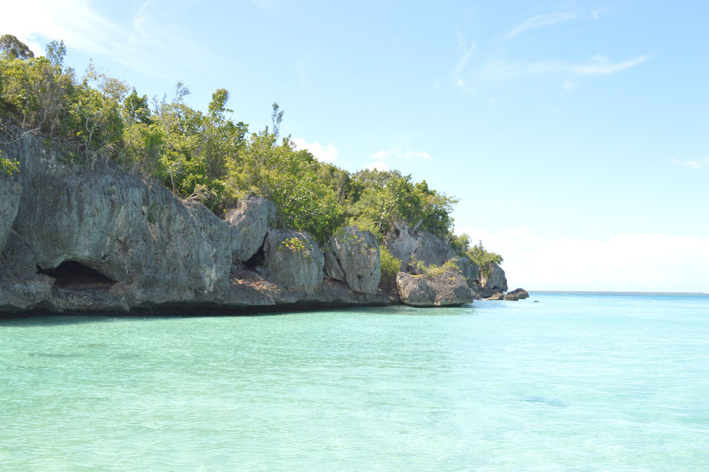

El Parque Nacional del Este, también conocido como Parque Nacional Cotubanamá, es una de las reservas naturales más importantes de la República Dominicana. Este parque ofrece una rica biodiversidad y paisajes impresionantes.
A continuación, se muestra una imagen del Parque Nacional del Este:
En el parque, puedes realizar diversas actividades como:
Para más información, puedes visitar los siguientes enlaces:
Escucha los sonidos de la naturaleza en el Parque Nacional del Este:
Este Blog fue creado por Willy Manuel Gomez Cruz.